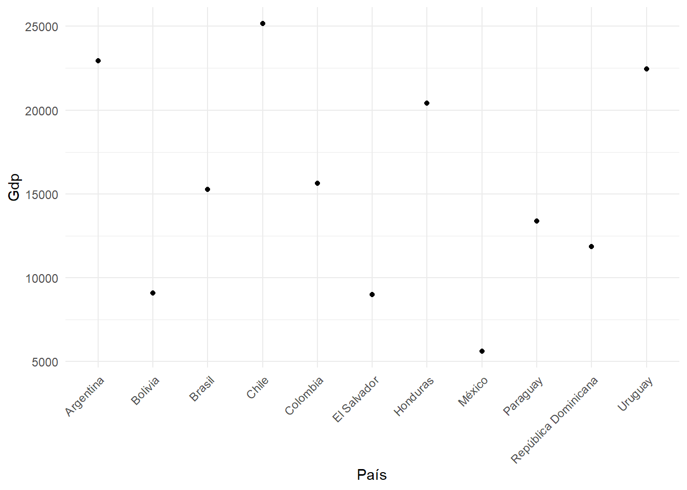
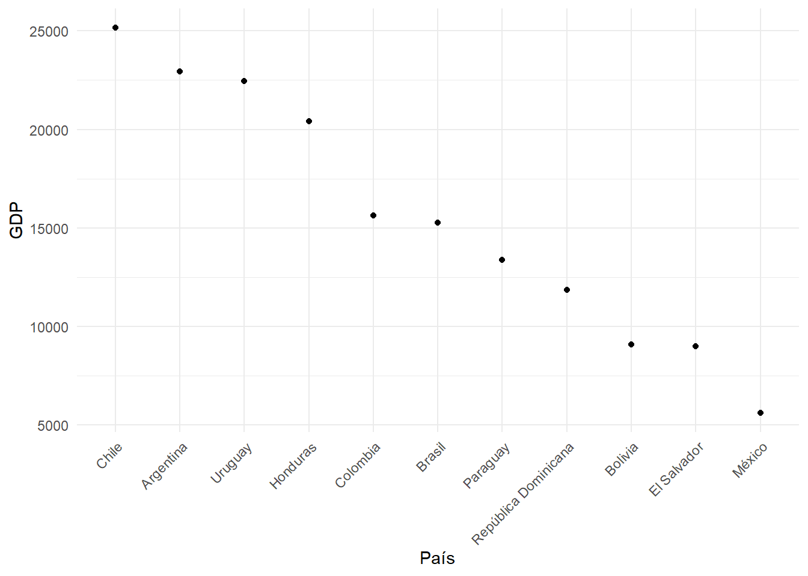
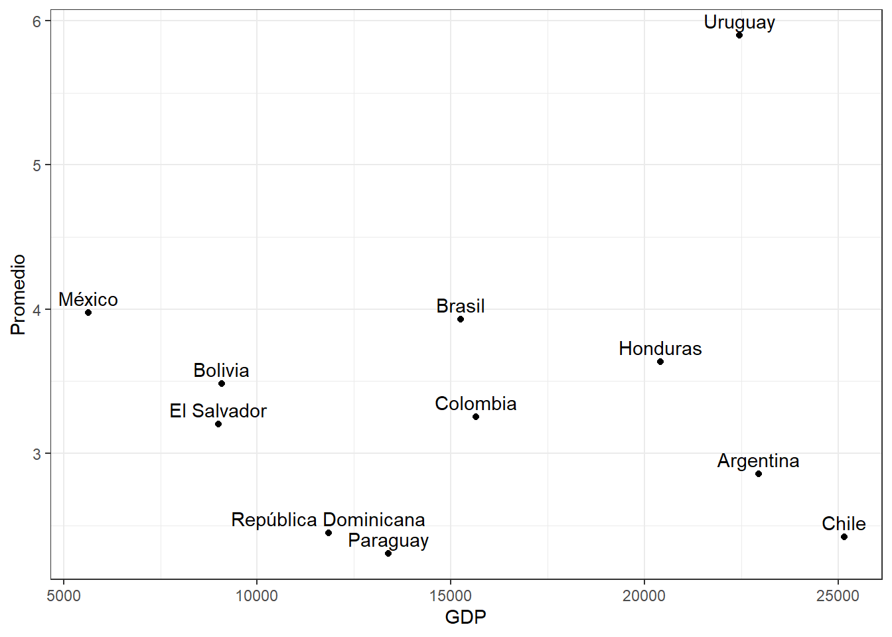

pacman::p_load(sjlabelled,
dplyr, #Manipulacion de datos
stargazer, #Tablas
sjmisc, # Tablas
summarytools, # Tablas
kableExtra, #Tablas
sjPlot, #Tablas y gráficos
corrplot, # Correlaciones
sessioninfo, # Información de la sesión de trabajo
ggplot2) # Para la mayoría de los gráficosPercepción de la migración ante la llegada de inmigrantes de nacionalidad venezolana a Chile
“Percepción de la migración ante la llegada de inmigrantes de Nacionalidad venezolana a Chile”
Introducción:
En los últimos cuatro años ha crecido exponencialmente la llegada de inmigrantes a nuestro país, frente a esto, se vuelve recurrente el pensar cómo los chilenos abordan o se piensan a sí mismos respecto de los sujetos migrantes, más en específico pensando en los inmigrantes de nacionalidad venezolana que han llegado a nuestro país en los últimos años. Los estudios respecto de la migración internacional en Chile han sido abordados desde diferentes perspectivas, siendo el racismo y la discriminación la línea de investigación prominente. (Mahara Sleiman Mora 2023).
Las oleadas de inmigrantes no son un fenómeno nuevo en cuanto a la inmigración en Chile respecta, ya que en décadas anteriores han existido antecedentes sobre oleadas migratorias desde Perú, Bolivia, Haití, y Venezuela, en cuanto a las más nombradas por los medios de comunicación. Las cifras indican que, el oleaje de migrantes que han arribado a nuestro país en los últimos años ha ido en aumento, existiendo en las cifras datos que son relevantes en cuanto a las migraciones sur-sur que se abordan desde Perú, Bolivia, Haití, Colombia, Ecuador, y Venezuela, siendo este el caso central de mi propuesta. A modo de ejemplo, solo durante el año 2021 hubo un total de 56.586 ingresos irregulares, la cifra más alta de ingresos por pasos no habilitados registrada en Chile durante los últimos diez años Estrella Aguilar Guerra, Franco Villalobos Ceballos, and Romina Ramos Rodríguez (2023) . A raíz de la pandemia en 2020 se agudizó la crisis migratoria desde Venezuela, según datos consultados al SERMIG existió un aumento en las Residencias Definitivas otorgadas a personas venezolanas (que pasaron de 14.827 en 2021 a 66.771 en 2022). Siendo este un reflejo del aumento de personas provenientes desde venezuela, teniendo como último destino nuestro país: según datos consultados en el Reporte 2021-2022 del Servicio Nacional de Migraciones. A raíz de este aumento, considero existe un fenómeno nuevo y poco estudiado hasta ahora que es la percepción que se tiene en Chile de los migrantes venezolanos. Como se comportan las relaciones e interacciones entre estos, pensando la realidad en torno a los discursos de odio difundidos en redes sociales y expresados hacía personas de nacionalidad venezolana que residen en nuestro país. Mediante la revisión de variables extraídas de la encuesta LAPOP, que indagan sobre los niveles de satisfacción o insatisfacción respecto a la entrega de servicios sociales de parte del Estado a personas migrantes. Este debate público remite a discursos difundidos en redes sociales que pregonan que “El Estado le quitará la casa a nacionales para entregárselas a familias migrantes que se encuentran sin hogar” o el rumor extendido de qué personas migrantes tienen más acceso a subsidios de vivienda que no migrantes”. Por lo cual, medir la percepción de la migración que se tiene en Chile hacía migrantes venezolanos contribuye a esclarecer si esta es una percepción negativa en cuanto a los chilenos respecta, dado el aumento y las diferencias culturales acontecidas en los últimos años. Juan Carlos Rodríguez Torrent and Rodrigo Vargas Callegari (2023).
El aumento de los discursos de odio y la xenofobia han sido la tónica de los ultimos meses en los medios de comunicación. La percepción o posible llegada que tengan los medios con estos discursos influye en la percepción que tienen las personas con respecto a los inmigrantes Nairbis Desirée Sibrian Díaz, Neida Josefina Colmenares Mejías, and Juan Carlos Núñez Silva (2023) algunas de las conversaciones en cátedra del curso migraciones, una mirada interseccional comentan que el aumento de la percepción negativa de migrantes en Chile tiene su fundamento en problemas estructurales de nuestro país. Por lo cual los discursos de odio hacia personas de nacionalidad venezolana serían utilizados como un chivo expiatorio, hacia problemas de caracter nacional como aumento del desempleo, la crisis en seguridad, vivienda, acceso a la salud pública, y a la educación pública. Si bien una investigación más amplia podría abordar todos estos fénomenos, en este caso nos limitaremos a hacer una investigación a partir de una revisión de discursos de odio esparcidos en los medios de comunicación y las redes sociales, así como informes y reportes del Estado que den cuenta de las estadísticas y tasas reales de acceso a beneficios del Estado a las que cuentan las personas migrantes. Es posible plantear que los discursos de odio radican en la otredad, pensarnos como superiores moral y políticamente deja al otro en un puesto de jerarquización hacia abajo, en el cual no lo vemos como igual, sino como un otro extraño o inferior a nosotros mismos. Esto fomentaría una percepción negativa de la llegada de migrantes venezolanos a Chile, sin tomar en consideración los beneficios que esto podría conllevar para el país, como por ejemplo el aumento de trabajadores en edad laboral, o trabajadores en puestos de trabajo que ya no quieren ser tomados por los mismos nacionales.
Esta percepción negativa está ligada a interiorización de discursos xenófobos, racistas que se encuentran en el imaginario colectivo de nuestro país, en el artículo “el otro migrante negro y nosotros el chileno” María Tijux extrae fragmentos de entrevistas en las que se indica la percepción fragmentada que se tiene hacía migrantes racializados, mal llamados “negros”. Existe una caricaturización, exageración de la mirada con la cual se sexualiza, menosprecia, y denigra al otro como sujeto migrante frente al nacional. Una mirada que para la autora tiene su raíz en la propia historia de nuestro país, en la que la negritud es invisibilizada desde la colonia, y en la cual el chileno se percibe como blanco así mismo. Sin duda, esta autopercepción influye en la configuración de la realidad nacional actual, en la cual no solo se esparcen discursos negativos hacia la migración, si no más bien estos se apuntan hacia la migración racializada, pobre, feminizada. Lo que expresa una realidad poco compartida de cuan tolerantes somos frente a otro que es diferente a nosotros mismos.
#Cargar paquetes
#Cargar base de datos
load(url("https://github.com/Kevin-carrasco/R-data-analisis/raw/main/files/data/latinobarometro_total.RData")) #Cargar base de datos
load(url("https://github.com/Kevin-carrasco/R-data-analisis/raw/main/files/data/data_wvs.RData")) #Cargar base de datoscontext_data <- wvs %>% group_by(B_COUNTRY) %>% # Agrupar por país
summarise(gdp = mean(GDPpercap1, na.rm = TRUE), # Promedio de GDP per capita
life_exp = mean(lifeexpect, na.rm = TRUE), # Promedio esperanza de vida
gini = mean(giniWB, na.rm = TRUE)) %>% # Promedio gini
rename(idenpa=B_COUNTRY) # Para poder vincular ambas bases, es necesario que la variable de identificación se llamen igual
context_data$idenpa <- as.numeric(context_data$idenpa) # Como era categórica, la dejamos numérica
proc_data <- proc_data %>% group_by(idenpa) %>% # agrupamos por país
summarise(promedio = mean(conf_inst, na.rm = TRUE)) # promedio de confianza en instituciones por paísdata <- merge(proc_data, context_data, by="idenpa")
data <- data %>%
mutate(idenpa = as.character(idenpa)) %>%
mutate(idenpa = case_when(
idenpa == "32" ~ "Argentina",
idenpa == "68" ~ "Bolivia",
idenpa == "76" ~ "Brasil",
idenpa == "152" ~ "Chile",
idenpa == "170" ~ "Colombia",
idenpa == "188" ~ "Costa Rica",
idenpa == "214" ~ "Cuba",
idenpa == "218" ~ "República Dominicana",
idenpa == "222" ~ "Ecuador",
idenpa == "320" ~ "El Salvador",
idenpa == "340" ~ "Guatemala",
idenpa == "484" ~ "Honduras",
idenpa == "558" ~ "México",
idenpa == "591" ~ "Nicaragua",
idenpa == "600" ~ "Panamá",
idenpa == "604" ~ "Paraguay",
idenpa == "858" ~ "Uruguay",
idenpa == "862" ~ "Venezuela"))
data$gdp <- as.numeric(data$gdp)
data$gdp[data$gdp==0] <- NA
data <- na.omit(data)##Visualizaciones
sjmisc::descr(data,
show = c("label","range", "mean", "sd", "NA.prc", "n"))%>% # Selecciona estadísticos
kable(.,"markdown") # Esto es para que se vea bien en quarto| var | label | n | NA.prc | mean | sd | range | |
|---|---|---|---|---|---|---|---|
| 4 | promedio | promedio | 11 | 0 | 3.40077 | 1.016976 | 3.59 (2.3-5.9) |
| 1 | gdp | gdp | 11 | 0 | 15528.18364 | 6480.045512 | 19523.79 (5631.2-25154.99) |
| 3 | life_exp | life_exp | 11 | 0 | 75.90909 | 2.286593 | 8.8 (71.24-80.04) |
| 2 | gini | gini | 11 | 0 | 45.46364 | 4.156266 | 14.2 (39.7-53.9) |
Referencia tabla descriptiva Table 1
view(dfSummary(data, headings=FALSE))Switching method to 'browser'Output file written: C:\Users\hp\AppData\Local\Temp\Rtmpe4qm8X\file1e546b927d35.html##Graficos:
#para el segundo grafico haremos un #| label: “con diferente nombre” y fig-cap: “titulo del grafico diferente”
ggplot(data, aes(x = idenpa, y = gdp)) +
geom_point() +
labs(x = "País", y = "Gdp") +
theme_minimal()+
theme(axis.text.x = element_text(angle = 45, hjust = 1))
Para referenciar el grafico usaremos: Figure 1
data_sorted <- data %>% arrange(desc(gdp))
ggplot(data_sorted, aes(x = factor(idenpa, levels = idenpa), y = gdp)) +
geom_point() +
labs(x = "País", y = "GDP") +
theme_minimal() +
theme(axis.text.x = element_text(angle = 45, hjust = 1))
refencia Figure 2
data %>%
ggplot(aes(x = gdp, y = promedio, label = idenpa)) +
geom_point() +
geom_text(vjust = -0.5) +
labs(x = "GDP", y = "Promedio") +
theme_bw()
Referencia Figure 3
References
Estrella Aguilar Guerra, Franco Villalobos Ceballos, and Romina Ramos Rodríguez. 2023. “Migración Venezolana En El Norte de Chile: El Caso de La Infancia Migrante No Acompañada.” Simbiótica 10 (1): 37–67. https://doi.org/10.47456/simbitica.v10i1.40866.
Juan Carlos Rodríguez Torrent, and Rodrigo Vargas Callegari. 2023. “Migración Al Chile Neoliberal: Ciudadanía, Arraigo y Autonomía.” Política, Globalidad y Ciudadanía 9 (18): 135–54. https://doi.org/10.29105/pgc9.18-8.
Mahara Sleiman Mora. 2023. “Trayectorias Migratorias Transnacionales En El Contexto de La Migración Sur-Sur En La Ciudad de Temuco, Chile.” Revista Temas Sociológicos, no. 31 (January): 293–324. https://doi.org/10.29344/07196458.31.2766.
Nairbis Desirée Sibrian Díaz, Neida Josefina Colmenares Mejías, and Juan Carlos Núñez Silva. 2023. “Estrategias Desinformativas Sobre Migración En Chile: Encuadre de Noticias Falsas Respecto a La Movilidad Humana.” Migraciones. Publicación Del Instituto Universitario de Estudios Sobre Migraciones, September. https://doi.org/10.14422/mig.2023.021.